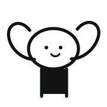

本周
2026年06月08日 至 14日
连续记录天数
一二三四五六日
本周连续记录：3天最高连续记录：9天
心情指数
8.3
相比上周：+12%
相比上月：+6%
心情分布

暖心
共记录心情：5条 · 最多心情
详细数据统计
你在傍晚和睡前更容易记录「暖心」事件，旅行和朋友相关内容占比最高。
2026年06月08日 至 14日
相比上周：+12%
相比上月：+6%

共记录心情：5条 · 最多心情
你在傍晚和睡前更容易记录「暖心」事件，旅行和朋友相关内容占比最高。